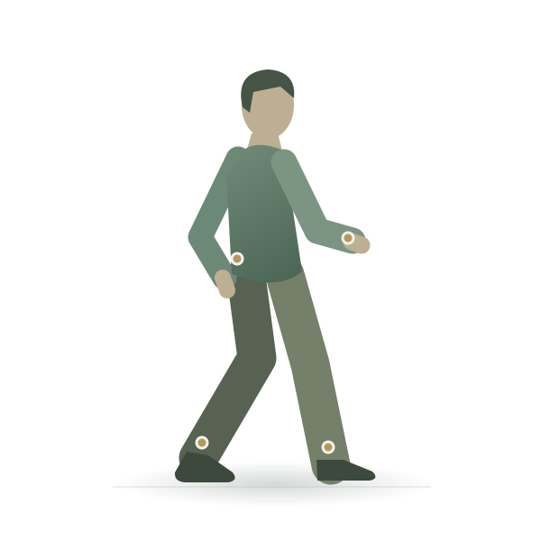
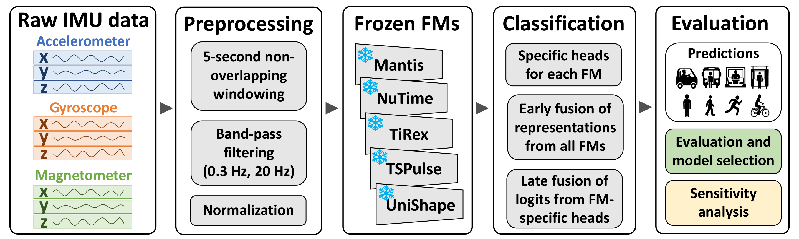

Movement, recorded.
A phone measures acceleration, rotation and the magnetic field across nine channels.
I study how machine learning models learn from time-series data. My current research uses frozen foundation-model representations for activity recognition, freezing-of-gait detection and clinical gait assessment.
We compared five frozen time-series models. The selected system combines three classifiers to recognize eight activities and transport modes.
A phone measures acceleration, rotation and the magnetic field across nine channels.
Illustrative motion of the selected method; signals and output are not recorded predictions.
Acceleration, rotation and the magnetic field, each along three axes: nine channels describing the phone’s movement.
At 100 Hz, a five-second window holds 500 samples per channel. The same physical interval goes to each model.
Classifiers using frozen NuTime, MantisV2 and TiRex representations contribute probabilities with weights 0.54, 0.29 and 0.17.
Still, Walk, Run, Bike, Car, Bus, Train and Subway. Walking is shown as an illustrative output, not a recorded prediction.
Four body-worn IMUs, two frozen models, one window-level detector. Our study examines freezing-of-gait detection on FoG-STAR.
Forward steps, shifting weight and a natural arm swing.

Illustrative movement-derived signals; not recorded IMU data or model predictions. Character by Quaternius · CC0.
Freezing of gait can briefly interrupt effective forward stepping. The animated person is an illustrative example, not a patient recording.
The animation illustrates a brief interruption of effective forward stepping. FoG can take different forms; this is one schematic example.
IMUs on both ankles, the lower back and the most affected wrist measure acceleration and angular velocity across 24 channels.
Frozen UniShape and MantisV2 representations are combined through cross-attention.
The selected UniShape + MantisV2 system uses cross-attention for FoG/non-FoG detection in offline two-second windows.
Our study compares full trials, straight walking and turns. Frozen NuTime representations are pooled into a participant-level summary for classification.
Scroll through the method or use the slider and stage buttons. Manual controls hold your view. Follow scroll returns to the page position.
Schematic method · exploratory internal validation · no clinical deployment claim.
Scroll or choose a stage
Compare continuous trials with supplied offline straight-walking and U-turn segments. Four IMUs provide 24 accelerometer and gyroscope channels at 100 Hz.
Each channel in a two-second window is encoded separately. The pretrained encoder stays fixed and returns a 128-dimensional representation.
Mean, maximum, minimum and standard deviation summarize the window representations across a participant’s eligible trials.
A balanced logistic-regression head evaluates binary, three-class and eight-cohort targets using shared participant folds.
Frozen and adapted foundation models, multichannel inputs, and the ways representations transfer between tasks.
Participant-aware evaluation, generalization, and understanding where a model fails.
Activity recognition, freezing-of-gait detection and participant-level gait assessment from sensor recordings.

Publications · 2026
Three 2026 papers on frozen time-series foundation models for wearable sensing. Statuses are kept current.
HASCA · UbiComp/ISWC 2026 CompanionAccepted · DOI issued
Compares five frozen time-series foundation models for activity and transport-mode recognition from a phone. The final system fuses three classifiers (NuTime, MantisV2, TiRex) and placed 1st in the SHL 2026 Challenge.
My partTSPulse feature extraction, embedding caching and downstream classifiers; validation-split and leakage checks.
IEEE SPMB 2026Accepted with mandatory revisions
Compares full trials with straight-walking and U-turn segments. Frozen NuTime window representations are pooled per participant for binary, three-class and eight-cohort classification.
ICBME 2026Accepted · Oral presentation
Offline window-level detection of freezing of gait from four body-worn IMUs: frozen UniShape and MantisV2 representations fused by cross-attention, using 2 s windows with a 0.5 s hop.
My partThe pipeline except fusion: sensor preprocessing, model-specific inputs, training and evaluation.
Accepted papers are listed with their current status; proceedings publication details are added when confirmed.
Honors
1st place, SHL 2026 Challenge. With team UT-IR at the University of Tehran; activity and transport-mode recognition from smartphone sensors.
University announcement ↗Admitted through the Exceptional Talents route. MSc in Computer Science, University of Tehran.
Ranked 2nd in the Computer Science cohort. BSc, Kharazmi University.
Finalist, Tech Olympics. AI / Text Processing track.
Experience
2026 — present
University of Tehran
Frozen time-series foundation models for activity recognition, freezing-of-gait detection and clinical gait assessment, with participant-grouped evaluation. Supervised by Bagher BabaAli.
Jan 2025 — Mar 2026
Kharazmi University · with Bardia Panahbehagh
Implemented Python genetic-algorithm methods for graphical unequal-probability sampling research.
Explore the project ↗2024 — 2025
Kharazmi University
Algorithm and Computability Theory. Supervisors: Bagher BabaAli (AI) and Morteza Mohammad-Noori (algorithms). Expected September 2027.
Ranked 2nd in the Computer Science cohort.